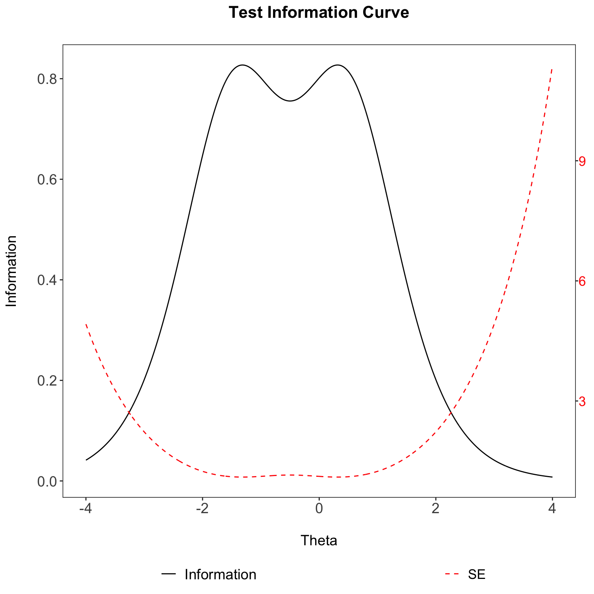

Test Information
Aiden Loe
02 December, 2018
Item and Test information
This section covers the area of item and test information. The test information is calculated based on the summation of all the item information. So what you ideally want is to have high item information. It is not possible in some instances such as the Rasch model, where the item information is fixed to 0.25 under the logistic distribution because the discrimination for all items are fixed at 1, where the difficulty of the item will be at the point of 0.5, giving equal likelihood for the test taker to get an item right or wrong.
1PL Item Information function
Now, bear in mind that a D constant is added to these formulaes to allow for the logistic distribution to approximate to a normal distribution. If you wish to base your calculations on a logistic distribution instead, remove the constant \(D\) in the formulas.
Under a 1PL (Rasch) model, the item information is defined as:
\(P_i(\theta) = 1/(1+ EXP(-D*a_i(\theta - b_i)))\),
\(Q_i(\theta) = 1- P_i(\theta)\)
\(\theta\) is the ability level of interest.
\(D\) is the constant of 1.702
2PL Item Information function
Under a 2PL model, the item information function is defined as:
where \(a_i\) is the discrimination parameter for item \(i\).
You can see that the 1PL is exactly the same as a 2PL model when the value of the discrimination (\(a\) parameter) is set to 1.
3PL Item Information function
Under a 3PL model, the item information function is defined as:
where \(c_i\) is the guessing parameter for item \(i\).
You can observe that the formula is a little bit more complex, but it really only introduces one new \(c\) parameter in the equation. The \(c\) parameter aka guessing parameter is typically fixed to 0 in both the 1PL and the 2PL model.
# difficulty parameter for an item is -1.5
b <- -1.5
# discrimination parameter
a <- 1
# guessing parameter
c <- 0
# Create item information function
i_info <- function(b, a=1,c=0, D=T, θ=seq(-4,4,length.out=1000)){
if(D == T) {D <- 1.702} else {D <- 1}
P <- NULL
Q <- NULL
Ii <- NULL
for(i in 1:1000){
P[i] <- 1/(1+ exp (-D*a*(θ[i] - b)))
Q[i]= 1-P[i]
Ii[i] =(D^2*Q[i]*(P[i]-c)^2)/(P[i]*((1-c)^2)) # (3PL)
}
return(Ii)
}
# Get a single item information based on a rasch model
itemInfo<- i_info(b = b, a = 1,c=0, θ=seq(-4,4,length.out=1000))
itemInfo[1:5]## [1] 0.03997190 0.04050487 0.04104474 0.04159158 0.04214549Now we have the item information for a single item along the theta range of -4 to 4.
We want to calculate the item information for all items.
# Given that the difficulty parameter for two items are -1.5, 0.5
b <- c(-1.5,0.5)
# Function to get all item information
item_info <- function(b){
item <- NULL
for(i in 1:length(b)){
item[[i]] <- i_info(b[i])
}
return(item)
}
# Get all item information
c <- item_info(b)
# Inspect first 5 item information values for second item
c[[2]][1:5]## [1] 0.001365363 0.001384081 0.001403057 0.001422292 0.001441790Test information
Now that we have our item information. We can calculate test information. Because the item information calculation is indepedent from each other, the test information is calculated by summing all the item information together.
The formula looks like this:
This is how it looks like in R once you have your item information:
# combind the item information column wise
d <- do.call('cbind',c)
# Then calculate the test information
test_info <- rowSums(d)
head(test_info)## [1] 0.04133726 0.04188895 0.04244780 0.04301387 0.04358728 0.04416809Now you essential have the test information that ranges from the \(\theta\) value of -4 to 4.
Standard Error
To translate the amount of information into a standard error of estimation, you only need to take the reciprocal of the square root of the amount of test information.
So it looks like this:
#get the standard error
se<- 1/(sqrt(test_info))
head(se)## [1] 4.918460 4.885964 4.853694 4.821650 4.789830 4.758233SE Plot
Given that you have all the test information and the SE. You can plot it nicely. The R code can be taken here.

You will notice that the SE values on the right y-axis are extremely high. In fact, they are higher than the test information values on the left y-axis (how strange!). This is expected since we are only using two items to calculate test information. As the number of items increase, more test information is provided, and the resulting SE will becoming smaller and smaller. In most (if not all) published papers, the left-axis values (test information) will always be higher than the right-axis values (SE).
A test information peaks at some point along the ability \(\theta\) scale with unequal precision (see plot). Such a test would be best for estimating the ability of test takers whose abilities fall near the peak of the test information function. Thus, a test would be desirable if the test takers’ abilities falls in the given range that has greater precision.
Test info to Reliability
2 step process for information to be directly related to reliability;
So given that you have an test information value, you must first calculate the SE and then follow by the reliability.
Alternatively, 1 step process for information to be directly related to reliability:
#Test information to Reliability (2 step)
info <- 10
se <- 1/sqrt(10)
reliability <- 1-se^2
# Reliability to Test information (2 step)
reliability <- 0.9
se <- sqrt(1-reliability)
Information<- (1/se)^2
#Test information to Reliability (1 step)
info <- 10
reliability <- 1-1/info
# Reliability to Test information (1 step)
reliability <- 0.9
info <- 1/(1-reliability)Info/Reliability Plot
To see how this reliability changes over a range of test information values.
From the SE plot you can see that:
SE of 0.32 is evaluate to reliability of 0.9.
SE of 0.45 is evaluate to reliability of 0.8.
SE of 0.54 is evaluate to reliability of 0.7.
From the Test information plot you can see that:
Information of 10 is equivalent to reliability of 0.9.
Information of 5 is equivalent to reliability of 0.8.
Information of 3.33 is equivalent to reliability of 0.7.
The R code can be taken here.

Acknowledgement
Would like to thank Diego Blum for working through the item and test information function with me.
Citations
Martínez Arias, M.R., Hernández Lloreda, M.V., & Hernández Lloreda, M.J. (2006). Psicometría. Madrid: Alianza.
Muñiz, J., Fidalgo, A.M., García-Cueto, E., Martínez, R., & Moreno, R. (2005). Análisis de los ítems. Madrid: La Muralla.